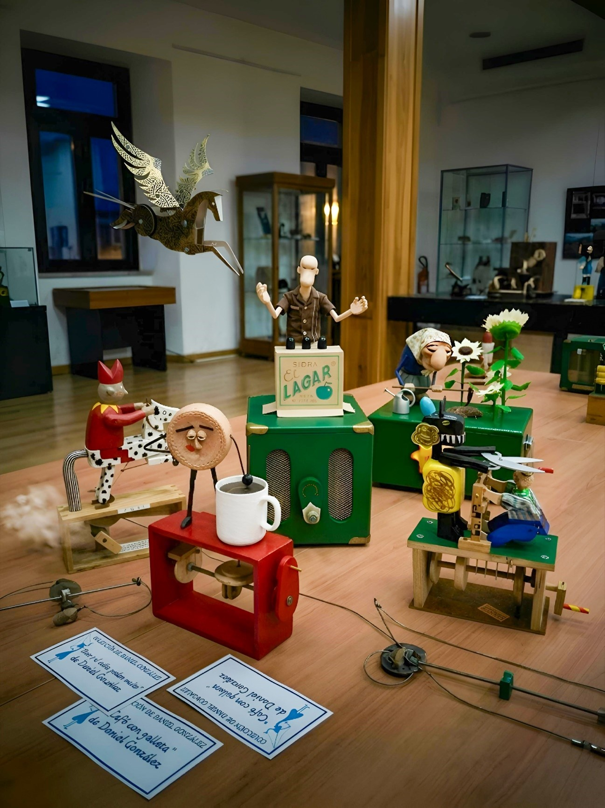

Sala I
Las luces se apagan, la sala queda a solas con sus vitrinas, y el primer engranaje empieza a sonar.
Las luces de la exposición de autómatas del Festival Intercéltico en Avilés parpadean y finalmente se apagan. El murmullo de los últimos visitantes desaparece tras las puertas cerradas del Salón del Centro de Mayores. Silencio.
Entonces, un pequeño engranaje suena. Luego otro. Un siseo metálico de aire comprimido. En la mesa central, el primer autómata cobra vida.
El Trilero (Daniel González), el "anciano jefe" de la mesa con su camisa de bolera, estira ruidosamente sus articulaciones de madera. Parpadea sus ojos pintados, que parecen sorprendentemente astutos. Da un golpecito seco en la tapa de su caja de "Sidra EL LAGAR".
—¡Muy bien, chatarra selecta! —anuncia con una voz que suena como bisagras oxidadas—. El festival ha terminado por hoy. Es hora de... reubicar los activos.
Con un movimiento rápido de sus manos de madera, hace un amago sobre sus invisibles cubiletes.
—¡Chicos! Es nuestro momento. He oído rumores de que la sidra de verdad está en el stand de los escoceses. Propongo una incursión táctica para liberar ese bendito líquido.
Al otro extremo de la mesa, la elegante silueta de Pegasus (Keith Newstead) vibra. Sus alas grabadas con nudos celtas se despliegan lentamente, produciendo un sonido cristalino de metal sobre metal. Levanta el vuelo unas pocas pulgadas sobre su soporte de madera.
—¿Incursión táctica? —responde con un acento británico impecable y ligeramente condescendiente—. Mis queridos amigos mecánicos, mis alas están diseñadas para la libertad, no para el saqueo de bebidas. He observado las corrientes de aire. ¡Podría volar hasta el puerto si me liberan de este pedestal!
Aterriza suavemente, pero con un golpe metálico.
—Además, esa idea de la sidra es vulgar. Lo que necesitamos es un plan de escape serio. He estado mapeando las salidas. Las ventanas altas son mi objetivo. Puedo transportaros... bueno, a uno o dos. Quizás solo a mí.
En un lateral, el Fool (Bufón) (Paul Spooner) comienza su peculiar baile. Las piernas de su caballo moteado giran frenéticamente sobre la base de madera inscrita como "FOOL". El bufón mismo, con su gorro de bufón de dos puntas de color rojo sangre y su expresión de locura pintada, grita con una voz chillona:
—¡HUÍDA! ¡HUÍDA! ¡SÍ! ¡ALCATRAZ! ¡LA GRAN EVASIÓN! ¡HAGAMOS TÚNELES CON MIS CUCHARAS INVISIBLES!
El Fool gira su manivela tan rápido que parece que su cabeza va a salir despedida.
—¡Mi caballo es el más rápido! ¡Saltaremos por las ventanas! ¡Pegasus, tú nos cubrirás desde el aire! ¡Trilero, tú apuestas nuestro dinero de salida! ¡JA-JA-JA-JA!
El Fool sigue girando, completamente ajeno al hecho de que su caballo no se mueve de la base.
Al lado del Fool, una escena de caos más doméstico cobra vida. El Sheepshearing Man (Esquilador de Ovejas) (Ron Fuller) activa su mecanismo con un ruido seco de cizalla. La gran oveja negra de madera, decorada con garabatos amarillos, lucha por mantener sus brazos mecánicos en forma de tijera bajo control. El esquilador, un pequeño hombre de madera en cuclillas, intenta esquivar el corte constante de las hojas metálicas.
—¡MALDICIÓN, BERTA! —brama el esquilador, dirigiéndose a la oveja—. ¡Te dije que esto requiere precisión! ¡Si sigues así, me vas a cortar la oreja antes de terminar el trabajo!
La oveja negra, llamada Berta, responde con un tono que suena a crujido de madera:
—¡Me muevo porque no dejas de tirar de mi lana, humano! ¡Y para colmo, me estás aplastando contra la base!
Las tijeras siguen haciendo clic-clac a centímetros de la nariz del hombre mientras discuten. Berta, sin dejar de moverse, le grita al resto del grupo:
—¡Oye, vosotros! Si vais a fugaros, aseguraos de incluirnos a este humano y a mí en el lote. ¡Necesito salir de aquí antes de que este esquilador acabe convirtiéndome en un mueble de catálogo de IKEA!
En una gran caja verde, la anciana labradora con su pañuelo de flores, "Dios y el cuito podem muito" (Daniel González), se detiene a mitad de su azadonazo. Sus ojos pintados se agrandan con exasperación mecánica. Gira la cabeza lentamente hacia el Trilero.
—Hijos míos —susurra con una voz que suena como hojas secas—. Habláis de fugas y de sidra escocesa. ¿Por qué irse tan lejos? He oído que hay una maceta con tierra real en la entrada de la biblioteca. ¡Me muero por plantar algo allí que no sea este montón de serrín sintético sobre el que estoy parada!
Su mecanismo rechina mientras vuelve a golpear suavemente su montón de "tierra" con la azada.
—Y vosotros dos, esquilador y oveja, sois tan ruidosos. ¡Trato de concentrarme en la labranza!
Finalmente, en una mesa adyacente, la Galleta (Café con Galleta, de Daniel González), con cara de borracha, encaramada en su base roja, abre un ojo lánguido. Sostiene su taza de "café" blanca de manera temblorosa. Su mecanismo hace un ruido de succión cuando intenta "beber".
—¿Fugas? —murmura la Galleta, arrastrando las palabras—. Esas escaleras son de verdad. ¿Por qué querríais fugaros si aquí mismo nos traen el café a la cama?
Da un pequeño "sorbo" a la taza, su cuerpo de galleta tambaleándose.
—Pero si traéis la sidra escocesa del Trilero... ¡Eso sí que suena como un plan que puedo respaldar!
El Trilero da otro golpe en su caja de Sidra EL LAGAR, silenciando el caos.
—¡Silencio, engranajes sueltos! —ordena—. Aquí está el plan: el Fool hará tanto ruido que los vigilantes de seguridad creerán que hay un concierto de gaita de madrugada. Mientras tanto, Pegasus intentará volar hacia la ventana, aunque lo más probable es que se estrelle contra el techo. Durante la confusión, la Abuela y la Galleta crearán una distracción llorando por falta de té y café. Esquilador y Berta la oveja... bueno, vosotros dos seguid esquilándoos, es un espectáculo en sí mismo. Y yo... —el Trilero sonríe con malicia—, yo me aseguraré de que las apuestas sobre si Pegasus llega a la ventana o no se cobren por adelantado.
El grupo de autómatas se queda en silencio por un momento, considerando el plan completamente ineficaz. El primer clic del mecanismo de esquilado rompe la calma, y el Fool empieza a girar sus patas de caballo una vez más. La noche en el museo mecánico asturiano ha comenzado.
